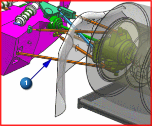

Define the flexible link
 Flexible Link (Setup group)
Flexible Link (Setup group)
-



Note
You can select any part of the indicated link.
-
Flexible Model
-
 Browse to the parts folder for this activity.
Browse to the parts folder for this activity.
-
demo_assy_flex_sim1-solution_1_0.rfi
This is the .rfi file generated from the NX Nastran solve in the previous Flexible Body activity. It should be located in the motion parts folder along with the FEM and Simulation files you created in Advanced Simulation.
Note
If you did not complete the previous Flexible Body activity, copy the provided Simulation file, named demo_assy_flex_sim1.sim, from the completed_sim_fem subfolder for this activity to the motion parts folder, and open the file in Advanced Simulation. Then, in the Simulation Navigator, right-click Solution 1 and select Solve to generate the .rfi file.
-
OK
RFI File dialog box
Leave the Flexible Link dialog box open for the next step.